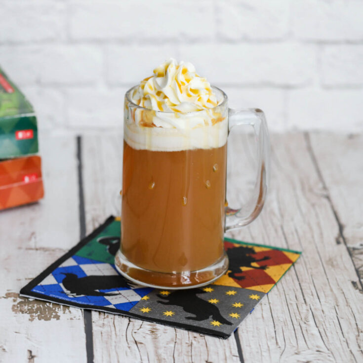

Butterbeer

Even on a snowy day in Hogsmeade, Butterbeer is the go to!
Ingredients
- 2 Cups Cream Soda
- 2 Tbsp. Butterscotch Syrup
- 1/2 Cup Heavy Cream
- Extra Butterscotch To Drizzle Over The Top
Steps
- With a stand or hand mixer, whip the heavy cream until soft peaks form.
- Add powdered sugar and continue to mix on high until stiff peaks form.
- Fill an icing bag (optional) and set aside.
- Pour about two ounces of cream soda into each glass.
- Add one tablespoon of butterscotch syrup to each (add a little more if you want a stronger butterscotch flavor).
- Stir until cream soda and butterscotch are blended.
- Divide the remaining cream soda between the two glasses and stir gently. Don't stir too much though or you'll lose some of the carbonation.
- Top butterbeer with whipped topping.
- Drizzle with butterscotch syrup and enjoy.